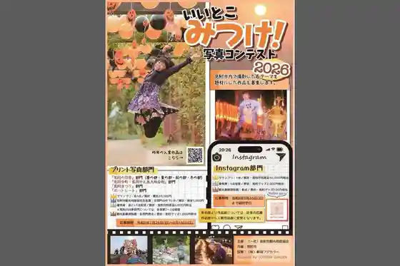
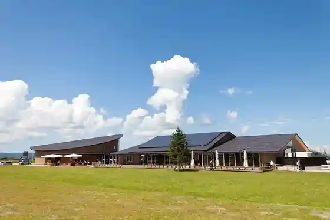
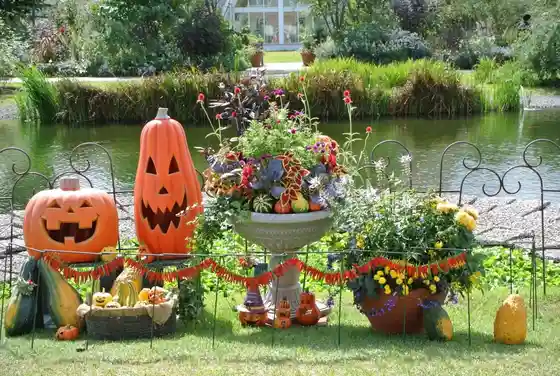
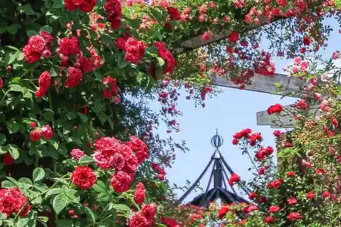

(Iitokomitsuke Shashin Kontesuto Sakuhin Ten 2026) in Neburu Mitsuke
Mitsuke, Niigata · 0258-89-6277 · Official / source link

Roadside Station (Pateio Niigata)
Mitsuke, Niigata · 0258-94-6211 · Official / source link

Mitsuke Ingurisshu Garden (Otamufea & Garden Haroin)
Mitsuke, Niigata · 0258-62-1700 · Official / source link

Mitsuke Ingurisshu Garden
Mitsuke, Niigata · 0258-66-8832 · Official / source link

Mitsuke Teiki Roten Market (Furusato Asa City) (Mitsuke Chiku (Ichi Roku Market), Ima Town Chiku (San Hachi Market))
Mitsuke, Niigata · 0258-62-1700 · Official / source link
Neburu Mitsuke
Mitsuke, Niigata · 0258-62-7801 · Official / source link
Nitta Park
Mitsuke, Niigata · 0258-62-1700 · Official / source link
Ohira Forest Park
Mitsuke, Niigata · Official / source link
Mitsuke Kenko Baths
Mitsuke, Niigata · 0258-86-1126 · Official / source link
Suido Yama Kannon Yama Park
Mitsuke, Niigata · 0258-62-1700 · Official / source link
Mitsuke Densho Kan
Mitsuke, Niigata · 0258-63-5557 · Official / source link
Mitsuke Sogo Gym
Mitsuke, Niigata · 0258-62-3661 · Official / source link
Tentoku Tera Inari Do
Mitsuke, Niigata · 0258-62-1700 · Official / source link
Mitsuke Tami Yakyujo
Mitsuke, Niigata · 0258-62-3661 · Official / source link
Shimin Forest
Mitsuke, Niigata · 0258-62-1700 · Official / source link
Oguri Yama Fudo In
Mitsuke, Niigata · 0258-62-1700 · Official / source link
Suido Yama Kannon Yama Park no Ajisai
Mitsuke, Niigata · 0258-62-1700 · Official / source link
Mirai Market
Mitsuke, Niigata · 0258-62-7877 · Official / source link
Niigataken Mitsuke Sugisawa Forest
Mitsuke, Niigata · 0258-62-1700 · Official / source link
Tsubaki Sawa Tera
Mitsuke, Niigata · 0258-62-1700 · Official / source link
Mitsuke Sports Park
Mitsuke, Niigata · 0258-62-3661 · Official / source link
Yamagata Aritomo Kahi
Mitsuke, Niigata · 0258-62-1700 · Official / source link
Mitsuke Komyuniteibasu
Mitsuke, Niigata · 0258-62-1700 · Official / source link
Ryotei no Machi Mitsuke no Shinise (Ryotei Ranchi O Hiru Kaiseki)
Mitsuke, Niigata · 0258-62-1700 · Official / source link
Kannon Yama Park no Buna, Akashide Shizen Hayashi
Mitsuke, Niigata · 0258-62-1700 · Official / source link
Mitsuke Odako Densho Kan
Mitsuke, Niigata · 0258-62-1700 · Official / source link
Fakutoriiautorettoshoppingu
Mitsuke, Niigata · 0258-66-4513 · Official / source link
Mitsuke MADE no Omotenashi Chotto Zeitaku Na Yokubari Go Hobi Tour
Mitsuke, Niigata · 0258-62-1700 · Official / source link
Ima Town Rekishi Sanpo Gaidogurupu Nabirazu Historic Site Meguri
Mitsuke, Niigata · 0258-66-2313 · Official / source link